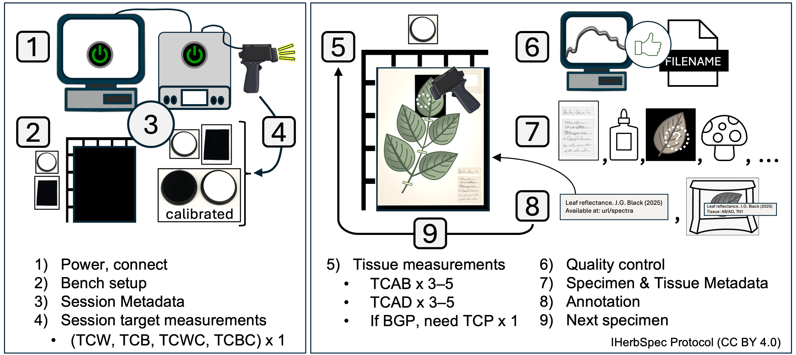

Part 2 – Measurement and Metadata Workflow
Overview
The recommended step-by-step workflow for spectral data collection and metadata entry. Steps include references to protocol sections providing further details.

Step 1. Instrument Setup and Connection
1.1. Plug in and turn on the instrument and light source.
- Allow >15 minutes or follow manufacturer SOPs for lamp warm-up and sensor cool-down.
1.2. Set up the computer and software, and connect the instrument following project SOPs.
Step 2. Prepare Bench and Specimens
2.1. Select specimens and tissues for measurement (see Part 6; Fig. 6.1).
2.2. Optionally, prepare filenames (see Part 3) in a separate document for copy–paste entry.
2.3. Prepare bench with the following materials (see Fig. 2.2):
- Required: white reference, black background
- Recommended: benchtop black background, rulers for tissue coordinates, tweezers, laboratory gloves (see Part 5), annotation labels, archival envelopes (see Section 5.4).
Step 3. Start Session and Score Session Metadata
3.1. Score Session Metadata (see Table 4.1):
- Record
sessionIddatetime in the formatYYYYMMDDHHMM(e.g.,202507011351).
- Score required fields:
projectID,sessionId,instrumentModel,opticalSetupDescription,measurementSettings,whiteReferenceDescription.
- Score recommended fields:
operator,lightSourceType,distanceTargetToSensor,lensFieldOfView,angleLightToSensor,measurementAreaDiameter.
3.2. Create a storage folder for spectral data named with the sessionId (e.g., 202507011351) and set it as the destination folder for saving measurement files.
Step 4. Collect White and Black Session Measurements
4.1. Take a white reference.
4.2. Set simple filename for white target (see Table 3.1):
PI<projectId>_SN<sessionId>_TCW- Example:
PIHUHcoca_SN202507011351_TCW
- Example:
4.3. Take 1 white target measurement.
4.4. Set simple filename for black target:
PI<projectId>_SN<sessionId>_TCB- Example:
PIHUHcoca_SN202507011351_TCB
- Example:
4.5. Take 1 black target measurement.
4.6. Optionally, take target measurements of each calibrated reflectance standard (see Section 5.3) using filename conventions (Table 3.1):
PI<projectId>_SN<sessionId>_TC<targetClass><serial number>- Example:
PIHUHcoca_SN202507011351_TCCW379902
- Example:
Step 5. Tissue Measurement Sequence
5.1. Take white reference at regular intervals (e.g., every 20 min.; see Section 1.2.2).
5.2. Determine if tissue is suitable for measurement (see Part 6). If not, skip to the next specimen.
5.3. Place specimen on benchtop black background with a ruler grid (recommended; see Fig. 4.2).
5.4. Place black background behind target tissue (required whenever possible; see Fig. 2.2).
5.5. Adaxial (AD) surface available:
- Filename:
SI<specimenId>_TC<targetClass>_TN<targetTissueId>- Example:
SI02022418_TCAD_TN1
- Example:
- Take at least 3 adaxial measurements; recommended 5 or more.
- Confirm on-screen quality before proceeding.
5.6. Abaxial (AB) surface available:
- Filename:
SI<specimenId>_TC<targetClass>_TN<targetTissueId>- Example:
SI02022418_TCAB_TN1
- Example:
- Take at least 3 abaxial measurements; recommended 5 or more.
- Confirm on-screen quality before proceeding.
5.7. If tissue measured on herbarium paper:
- Filename:
SI<specimenId>_TC<targetClass>_TN<targetTissueId>- Example:
SI00746092_TCP_TN1
- Example:
- Take 1 paper measurement.
5.8. Additional tissues (optional):
- Select other tissue units with new
targetTissueIds(recommended) and/or additionaltargetClassvalues (see Table 4.5). - Repeat tissue measurement steps.
Step 6. Quality Assessment, Quality Control
6.1. Review all spectra collected for the specimen before moving to the next specimen.
6.2. Delete and repeat any measurement that appears anomalous.
6.3. If quality is uncertain, take additional measurements.
6.4. Confirm filenames and targetClass / targetTissueId values are correct before proceeding.
Step 7. Score Specimen and Tissue Metadata
7.1. Score Specimen Metadata for every measurement (see Table 4.2):
- Required:
herbariumCode,specimenId
- Recommended:
scientificName,identificationQualifier,identifiedBy,dateIdentified,isTempControlled,annualTempMin,annualTempMax,isHumidityControlled,annualHumidityMin,annualHumidityMax
7.2. Score Tissue Metadata for every measurement (see Table 4.3):
- Required:
backgroundClass,hasLowReflectanceBackground,targetClass,tissueDevelopmentalStage,hasBackgroundInMeasurement,hasGlue,hasNonGlueContamination,measurementIndex
- Recommended:
backgroundDescription,targetTissueId,percentBackgroundInMeasurement,measurementFlags,tissueNotes,tissueLocation,comment
Step 8. Specimen and Tissue Annotation
8.1. Add project annotation label to sheet (recommended; see Section 5.4).
8.2. Annotate loose tissues in packets/envelopes with targetTissueClass and targetTissueId labels; store in an envelope on the sheet (see Fig. 4.2).
8.3. If applicable, annotate attached target tissues on herbarium sheet (unless already recorded in targetLocation).
Step 9. Move to Next Specimen
9.1 Repeat the sequence beginning at Step 5.

 IHerbSpec Protocol (
IHerbSpec Protocol (